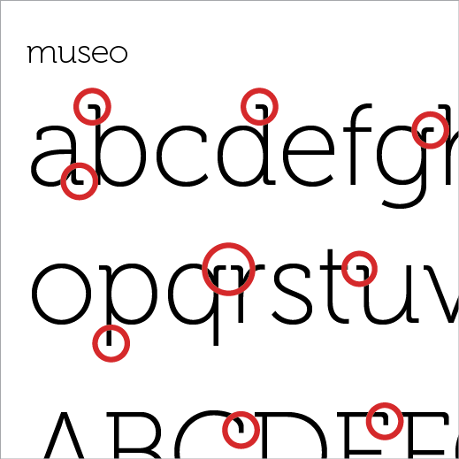

The current range of herbal supplement drinks' (e.g. slimming teas) packaging all have one thing in common.
It is the bad typography, unpolished logo and look and the sub-par quality packaging that all add up and make the product untrustworthy and suspicious. The apperance makes these products no different from those ‘magical snake blood’ and other alternative medicines that are labelled as ‘wonder drugs’.
Walk through the aisles of groceries and you are greeted with an onslaught of colors, packaging and marketing. Every product is trying to sell themselves to you, which many believe that the brighter the packaging the higher chance one captures buyer's attention. Sometimes if you are lucky, you even get a person who does a hard-sell and lets you actually sample the product.
Try hard as we may, but consumers do judge a book by the cover. That is how they choose. They choose with their eyes and their emotions.
In the world of alternative medicinal teas the mentioned general packaging/appearance must be modified to address the issue of trustworthiness. A different take on the image will speak both to the believers and the skeptics.
The Power of Threes
Good things come in 3’s. Moe, Larry and Curly, Huey, Duey and Louie, Father, Son and Holy Spirit and the list goes on.
Meta Caruna is also comprised of 3 main herbs :
- Senna Seeds
- Uproot Ladybell
- Purple rhizome yam
The Symbol Deconstructed
It is no coincidence that our logo has three major parts. These 3 leaves represent the 3 main ingredients of **Meta Karuna**.
The identical shape of the three represents: water, a feather, and a leaf:
- Water to represent cleanliness and purity
- Feather to represent lightness and ease
- Leaf to represent nature and freshness
We distill the values of **Meta Karuna** into a succinct symbol, which at a glance can illicit confidence and trust.
The Symbol — Combined
When we combine the shapes, we come up with something totally different. When combined, the individual shapes become more than just the sum of its parts. In parallel to Meta Karuna, individually the 3 herbs are beneficial on their own. and when combined they give you sense of balance. The tea not only helps in relaxation but also aids in overall digestion. One of the key benefits is its immediate remedy for constipation. Thus, it cleans your body; makes you feel light and not bloated; and freshens your whole being.
The 3 herbs are beneficial on their own and when combined, they give you a sense of balance or harmony within
Typeface
We choose Museo as our typeface because of its serifs. Museo has its serifs covering only 1/2 of the stems of letters, which look a lot like leaves on twigs. Its particularly earthy nature makes it the perfect typeface for **Meta Karuna**.

Museo also has a particularly wide en-width and quite a high x-height, which makes it very readable. Museo's rounded feature makes it a typeface that is approachable, friendly and credible.

One more thing...
Yes, the thing in the middle is a tea bag. ;)
Concept 2 : Light as a Feather
Meta Karuna Herbal Dietary Tea/Laxative Tea aims to help individual with sudden bout of constipation. Whenever we are constipated, we feel heavy, bloated and most of all, toxic.
Constipation is a simple problem that Meta Karuna dietary herbal tea can relieve. Meta Karuna is a laxative and an effective one at that.
Regular bowel movement should not be a pain in the a**.
When we have regular bowel movement, we feel light, light as a feather.
The Symbol
How light? This light. Jumping-so-high-light. We derive our symbol from this energetic and happy form and integrate it into our name.
Positioning it in the center of the name drives the point home. Meta Karuna’s main concern is YOU.
Feel light and easy with Meta Karuna.
Because after all, this is the essence of Meta Karuna, right?
The Logo
But having a strong icon to represent the brand is not enough. We support our symbol by providing a compatible typographical treatment.
The handmade lettering has an organic appeal and is fluid. Handmade lettering humanizes the brand. We make the brand approachable and relatable. Like a good friend, we personify the brand. Thereby making the products associated with the brand more trustworthy.
Typeface
The supporting typeface that we will use with the logo to complete the identity is Tisa Pro.
To contrast with the spontaneity of the logomark, Tisa Pro is a very organized and highly systematic typeface. Extremely readable at the same time being very reliable typeface, I see no other perfect typeface for the mark.
The Logo